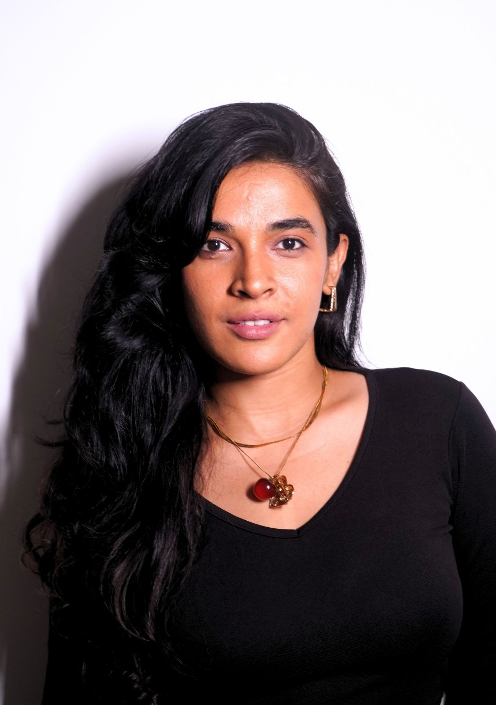
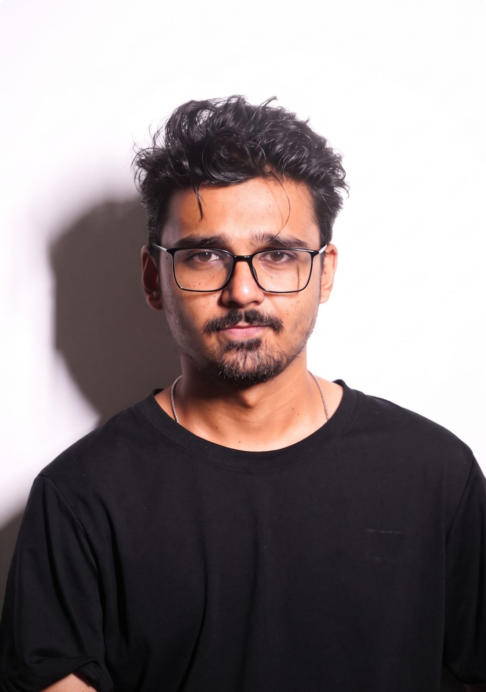

We're filmmakers first. Marketing came later.
We spent years making films and creating content for businesses. Somewhere along the way we realised that most brands weren't struggling because they lacked content. They were struggling because they looked and sounded like everyone else.
Different logos. Same ideas.
We weren't interested in becoming another agency producing more content for the sake of it. We wanted to understand businesses before we picked up a camera. To spend time discovering what already made them worth talking about, then build stories around those moments.

We don't think originality comes from inventing something that has never existed before. We think it comes from noticing something everyone else overlooked. That's where every great story begins, whether it's a film, a founder, or a business.
That's how Orgnl began.
Today we work with founders who genuinely care about what they're building. Restaurants, product brands, personal brands, startups—it doesn't really matter. Every business has a story. Our job is to uncover it and tell it honestly.
What we believe.

We don't believe great content can fix a bad business.
We also don't believe agencies build brands. Founders do that every single day through every product they make, every conversation they have, and every experience people remember.
Our role is much simpler. We find what's already special about a business, translate it into stories, and put those stories in front of the people who were looking for them all along.
That's all we've ever wanted Orgnl to be.